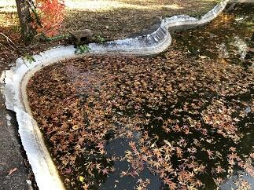
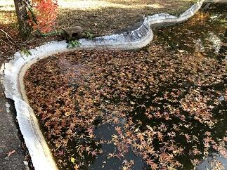
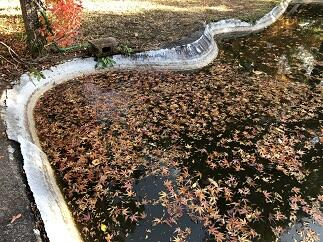

文字
背景
行間


カテゴリ:学校環境
桜のある風景５
今日はこれまでにご紹介した桜の咲いている場所をお教えしましょう。


 １で紹介した河津桜は学思館の脇の木です。外の道路からもよく見える木です。(写真上段左)
１で紹介した河津桜は学思館の脇の木です。外の道路からもよく見える木です。(写真上段左)
２で紹介した寒桜はプールの奥、野球場の得点板の奥にある木です。（写真上段右）
３で紹介した河津桜は、第2体育館脇で弓道場の上の斜面の木です。（写真下段左）
４で紹介したシナミザクラは、記念館の脇にある木です。（写真下段右）
お立ち寄りの際によろしければご覧ください。
１で紹介した河津桜は学思館の脇の木です。外の道路からもよく見える木です。(写真上段左)２で紹介した寒桜はプールの奥、野球場の得点板の奥にある木です。（写真上段右）
３で紹介した河津桜は、第2体育館脇で弓道場の上の斜面の木です。（写真下段左）
４で紹介したシナミザクラは、記念館の脇にある木です。（写真下段右）
お立ち寄りの際によろしければご覧ください。
桜のある風景４

 今日の桜情報は、まずは、ソメイヨシノの様子からご報告しますと、写真ではわかりずらいですが蕾（写真左）が緑色から濃いピンク色になってきました。蕾の色がうすいピンク色になるといよいよ開花です。また、別の場所にあるシナミザクラ（写真中央、右）も咲き始めました。
今日の桜情報は、まずは、ソメイヨシノの様子からご報告しますと、写真ではわかりずらいですが蕾（写真左）が緑色から濃いピンク色になってきました。蕾の色がうすいピンク色になるといよいよ開花です。また、別の場所にあるシナミザクラ（写真中央、右）も咲き始めました。 桜のある風景３


 校内にある多くの桜は、同じ種類でも、木が育った場所や環境で咲く時期が、かなりずれます。今日ご紹介する桜は、風景１でご紹介した河津桜よりは日当たりが、良い場所で咲いているので、葉がかなり目立っています。なお、同じ環境にある本校のソメイヨシノの蕾も膨らみ始めた状態です。このソメイヨシノの桜の開花予想については、「2月1から毎日の最高気温を足していき、合計して600度になったときに桜が開花する」と600度の法則があると言われています。であるとすると昨日までに500度前後なので、これから12から14度くらいの平均でいけば７，８日後くらいには開花するのではないかと思われます。最新の開花予想と合わせて観察していきたいと思います。
校内にある多くの桜は、同じ種類でも、木が育った場所や環境で咲く時期が、かなりずれます。今日ご紹介する桜は、風景１でご紹介した河津桜よりは日当たりが、良い場所で咲いているので、葉がかなり目立っています。なお、同じ環境にある本校のソメイヨシノの蕾も膨らみ始めた状態です。このソメイヨシノの桜の開花予想については、「2月1から毎日の最高気温を足していき、合計して600度になったときに桜が開花する」と600度の法則があると言われています。であるとすると昨日までに500度前後なので、これから12から14度くらいの平均でいけば７，８日後くらいには開花するのではないかと思われます。最新の開花予想と合わせて観察していきたいと思います。 桜のある風景２


 今日は、種類が特定できませんが、たぶん寒桜かなと思われる桜をご紹介します。
今日は、種類が特定できませんが、たぶん寒桜かなと思われる桜をご紹介します。 桜のある風景１

 桜の開花が佐倉高校でもちらほらと見られるようになってきました。桜といってもそれぞれ咲く時期や咲く場所、色彩や咲き方がいろいろであり、それぞれに趣があります。今年は例年に比べ桜の開花が早いとのこと。これから、何回か校内の桜の様子をお届けしていきたいと思います。今回は校内の河津桜をご紹介します。
桜の開花が佐倉高校でもちらほらと見られるようになってきました。桜といってもそれぞれ咲く時期や咲く場所、色彩や咲き方がいろいろであり、それぞれに趣があります。今年は例年に比べ桜の開花が早いとのこと。これから、何回か校内の桜の様子をお届けしていきたいと思います。今回は校内の河津桜をご紹介します。 氷結
 東郷池の水を濾過するために水を循環させていますが、どうしても池の表面で流れが緩やかな部分があり、このところの寒気の強まりでせいで、池の表面の3分の１が氷結しました。(左写真)ちなみに佐倉高校周辺の早朝の気温は、マイナス３℃でした。また、このところ１７日間連続で雨が降っていないこともあり、乾燥注意報が継続して出されています。空気が乾燥すると、のどの粘膜の防御機能が低下し、インフルエンザにかかりやすくなるので手洗いや適度に水分を補給することが重要です。また、体のウイルスへの抵抗力を高めるために、十分な休養とバランスのとれた栄養摂取を日ごろから心がけましょう。あと、免疫力を高めるために腸内環境を整えることが大切です。そのためにも食べ物に気をつけるだけでなくお腹を冷やさないようにしましょう。みんなでこの冬を元気に乗り越えましょう。
東郷池の水を濾過するために水を循環させていますが、どうしても池の表面で流れが緩やかな部分があり、このところの寒気の強まりでせいで、池の表面の3分の１が氷結しました。(左写真)ちなみに佐倉高校周辺の早朝の気温は、マイナス３℃でした。また、このところ１７日間連続で雨が降っていないこともあり、乾燥注意報が継続して出されています。空気が乾燥すると、のどの粘膜の防御機能が低下し、インフルエンザにかかりやすくなるので手洗いや適度に水分を補給することが重要です。また、体のウイルスへの抵抗力を高めるために、十分な休養とバランスのとれた栄養摂取を日ごろから心がけましょう。あと、免疫力を高めるために腸内環境を整えることが大切です。そのためにも食べ物に気をつけるだけでなくお腹を冷やさないようにしましょう。みんなでこの冬を元気に乗り越えましょう。 御用始め

 今日は、佐倉は朝からとても寒くて通勤で学校に歩いている途中は目と耳が痛かったです。（凍っちゃうんじゃないかと思うほど）
今日は、佐倉は朝からとても寒くて通勤で学校に歩いている途中は目と耳が痛かったです。（凍っちゃうんじゃないかと思うほど）案の定、気温は氷点下だったようで東郷池も凍っていました。寒の入りが近いので朝晩の寒さが一段と厳しくなっているようです。特に室内と外の寒暖差が激しいので皆さんも健康に気を付けてお過ごしください。
落葉舞い散る東郷池
いよいよ、紅葉が落葉になって地面や水面を美しく彩る季節となりました。見上げていた視線を足元に落として、その美しさに感動する一方で、掃除をする大変さに思いがめぐります。自然のなかで、たとえば山のなかに生える紅葉の落葉であれば、自然の食物連鎖のサイクルに任せておけば有効に活用されるので、いちいち掃除などしません。ところが、これが庭に生える樹木からの落葉となると、庭を落葉だらけにしておく訳にもいかず毎日掃除をするわけです。しかも、この季節はいったん綺麗に掃除しても、ひと風吹けばまた元通りという恐怖の体験を何度もする時期なのです。


写真のとおり東郷池も同じ状況です。落葉の下を鯉が優雅に泳ぐ姿も一興かもしれませんが、これも鯉が見えればの話ですね。 

写真のとおり東郷池も同じ状況です。落葉の下を鯉が優雅に泳ぐ姿も一興かもしれませんが、これも鯉が見えればの話ですね。
 環境整備
本校の第2グランド脇の通学路（京成佐倉駅から学校までの通学路）について、通学路に掛かっていた樹木の剪定と、雨がひどいときに第2グランドの土砂が流出しないようにする対策の一環として、土嚢をフェンス下に並べるなどの作業が一段落しました。お陰様で、枝落ち防止や視界確保による通学路の安全確保等に役立つとともに地域の景観の確保にも役立っています。千葉県教育庁関係部局のご尽力に感謝申し上げます。ありがとうございました。


紅葉だより３
本校の校内授業研修週間に併せて、一昨日は、ＳＧＨ運営指導協議会の方々に1年生のＳＧＨの課題研究の様子を御覧いただきご指導、ご助言をいただきました。また、昨日は、初任者研修における代表者授業を初任者の先生に英語教育拠点校としての英語の授業を中学校・高校の先生方に公開しました。その後、それぞれが指導助言の先生方を中心に、他校から参加された先生方を含めて研究協議を行いました。研究協議では内容の濃い協議がなされ、多くの学びがありました。今後の更なる授業改善に向けて頑張ってまいります。参加された先生方、ご助言いただいた先生方には厚く御礼申し上げます。
英語の研究協議会では、本校の先生方の工夫された授業のなかで生徒が生き生きと頑張る姿にどの先生方も感動していらっしゃいました。先生方と生徒の明るい表情が教室内で輝いていて素敵でした。

 昨日は、たいへん天候にも恵まれ、紅葉自体の美しが青空により一層映えて一段と綺麗でした。
昨日は、たいへん天候にも恵まれ、紅葉自体の美しが青空により一層映えて一段と綺麗でした。
英語の研究協議会では、本校の先生方の工夫された授業のなかで生徒が生き生きと頑張る姿にどの先生方も感動していらっしゃいました。先生方と生徒の明るい表情が教室内で輝いていて素敵でした。
昨日は、たいへん天候にも恵まれ、紅葉自体の美しが青空により一層映えて一段と綺麗でした。